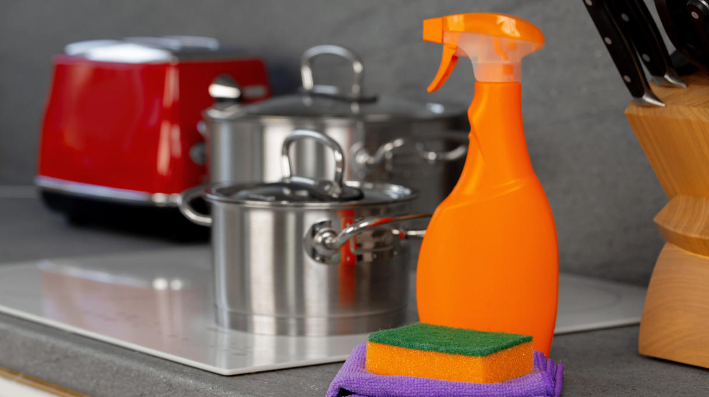

sles proveedor para productos de limpieza
Indique la forma exacta, concentración, aplicación, cantidad, embalaje, destino y documentos necesarios.
Ingrediente de limpieza industrial · Material crudo antimicrobiano y manufactura · SLES
SLES es un surfactante aniónico ether-sulfate suministrado en grados específicos de concentración y etoxilatación para la espuma, el mojado y la detergencia en formulaciones de limpieza.
Indique la forma exacta, concentración, formulación, cantidad, destino y documentos.

Respuesta directa del producto
SLES es un surfactante aniónico ether-sulfate suministrado en grados específicos de concentración y etoxilatación para la espuma, el mojado y la detergencia en formulaciones de limpieza.
La idoneidad depende del grado comercial exacto, la formulación completa, el sustrato, el proceso de fabricación, los controles de los trabajadores, la clasificación del transporte y las reglas del mercado de destino.
Guía de compra
Utilice estas consultas de compra específicas al comparar una fabricante químico, proveedor de China, oferta de un distribuidor, muestra o cotización para suministro a granel.
Indique la forma exacta, concentración, aplicación, cantidad, embalaje, destino y documentos necesarios.
Solicite una cotización específica con especificación actual, base de transporte, Incoterm y plazo de entrega.
Comparta toda la fórmula, proceso, función de destino, sustrato, necesidades de compatibilidad y pruebas de producto terminado.
Califica identidad, métodos, COA, SDS, clasificación, certificados, trazabilidad y control de cambio.
Selección de aplicaciones
Estas son áreas de pantalla de formulación, no aprobaciones universales, instrucciones de uso, declaraciones de eficacia o resultados garantizados.
Evaluar las formulaciones de limpieza doméstica e institucional contra la especificación privada actual, la formulación completa, las condiciones de uso y los requisitos del mercado de destino.
Evaluar detergentes líquidos y limpiadores de superficie dura contra la especificación privada actual, formulación completa, condiciones de uso y requisitos del mercado de destino.
Evaluar los sistemas de espuma, humedecimiento y recuperación del suelo contra la especificación privada actual, formulación completa, condiciones de uso y requisitos de mercado de destino.
Evaluar formulaciones antimicrobianas específicas para aplicaciones contra la especificación privada actual, formulación completa, condiciones de uso y requisitos de mercado de destino.
Selección técnica
Evaluar el homolog exacto, la etoxilación o la concentración activa frente a la especificación privada actual, formulación completa, condiciones de uso y requisitos de mercado de destino.
Evaluar la sal, el solvente, el ácido libre y la base de ph contra la especificación privada actual, formulación completa, condiciones de uso y requisitos de mercado de destino.
Evaluar la compatibilidad de espuma, viscosidad y formulación contra la especificación privada actual, formulación completa, condiciones de uso y requisitos de mercado de destino.
Evaluar las reclamaciones de autorización biocida y productos terminados contra la especificación privada actual, formulación completa, condiciones de uso y requisitos de mercado de destino.
Documentación técnica privada
Bespring Chemical no publica especificaciones de producto para esta limpieza materia prima en línea. Ventas de contacto para la especificación actual de fuente específica o TDS y confirme que su revisión, métodos y criterios coinciden con su proceso de aprobación.
Solicitar la especificación firmada actual o TDS, SDS, métodos analíticos, COA representativo y COA de lote.
Confirme la clasificación, información de transporte de las Naciones Unidas cuando proceda, embalaje compatible, segregación de almacenamiento y controles de emergencia.
Examen NIH PubChem registros químicos y ECHA chemical information. Para reclamaciones desinfectantes, verifique la etiqueta exacta registrada de producto terminado a través de Recursos de la EPA de EE.UU. o la autoridad nacional pertinente.
Nota de las reclamaciones: Una identidad prima-material no establece reclamaciones desinfectantes, desinfectantes o patógenos para un producto terminado. Las reclamaciones y direcciones deben ser respaldadas por la autorización del producto aplicable y la etiqueta aprobada.
Almacenamiento y manipulación
Cuestiones de comprador industrial
SLES es un surfactante aniónico ether-sulfate suministrado en grados específicos de concentración y etoxilatación para la espuma, el mojado y la detergencia en formulaciones de limpieza. La viabilidad debe establecerse en la formulación completa y el uso previsto.
Mezcla comercial; CAS a menudo 685-34-2; Etoxilatación y concentración activa—confirm. Familias de productos, soluciones, hidratantes y mezclas requieren la forma comercial exacta a ser declarada.
Bespring Chemical no publica especificaciones para este ingrediente de limpieza industrial en línea. Ventas de contacto para la especificación de fuente actual o TDS, métodos y COA representativo.
Solicite la especificación actual o TDS, SDS, COA representativo y de lote, clasificación de transporte y documentos regulatorios, de calidad y sitio aplicables para la fuente exacta.
Proporcione el grado exacto, concentración o forma, formulación y uso previsto, límites críticos, cantidad, embalaje, destino, documentos, fecha de recogida y entrega.
Última revisión: 2026-07-26 by equipo técnico y de exportación de Bespring Chemical.
Suministros relacionados
Examine disolventes, constructores, surfactantes, ácidos, alcalis y materias primas oxidantes.
Discuta una especificación privada, documentos, muestras y requisitos comerciales.
Examinar la contratación y el apoyo a las exportaciones para la adquisición internacional de productos químicos.
Suministro químico dirigido por la especificación
Compartir exactamente grado, concentración o forma, aplicación, límites críticos, cantidad, embalaje, destino y lista de documentos para una propuesta pertinente.